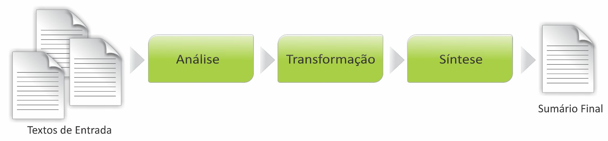
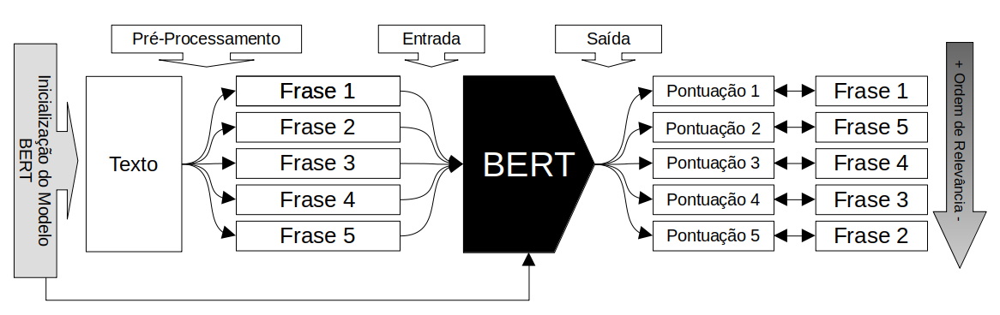
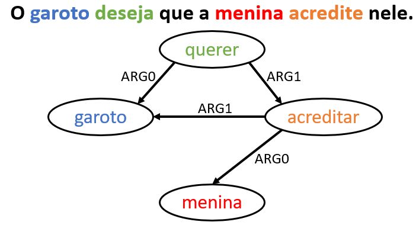
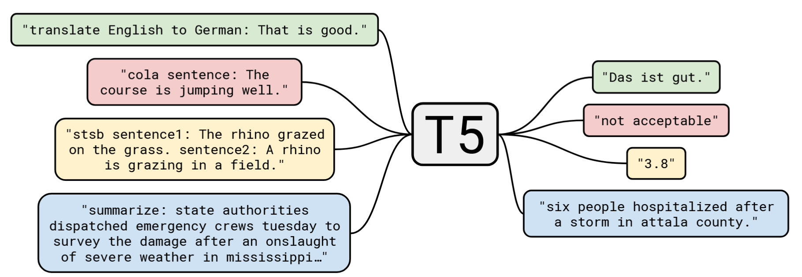

5 Sumarização Automática
5.1 Introdução
Talvez resumir seja uma das tarefas mais comuns em nosso cotidiano. Não são raras as vezes que nos pegamos reportando algo a alguém: quando compartilhamos sobre o último filme que assistimos, ou o livro que lemos, ou quem sabe quando contamos para alguém sobre aquela história ou notícia que vimos ou vivenciamos.
Nessas tarefas, partimos do princípio que não conseguiremos reproduzir exatamente o que aconteceu, mas faremos o máximo de esforço para transmitir uma mensagem mais próxima do original, valorizando o conteúdo mesmo em detrimento da forma. Assim, por exemplo, podemos optar por reestruturar o fato acontecido ou vivenciado dentro da narrativa sintetizada: selecionamos o que julgamos ser o mais importante do evento; lançamos mão de inversões dos fatos, prevendo melhorar a compreensão do ouvinte/leitor da narrativa; ou ainda trocamos as palavras e construções frasais originais por outras semelhantes ou sinônimas.
Outra consideração importante nesse processo é levar em conta o tempo ou limite (textual) que temos à disposição para a construção da narrativa que foi resumida. Saber disso de antemão ditará o quão detalhista ou generalista precisaremos ser na síntese dos fatos, tendo em vista que quanto mais tempo e/ou espaço tivermos, mais próximo à realidade estará a narrativa sintetizada.
Ao chegar nesse ponto do nosso exemplo é necessário nos questionar sobre algo bastante relevante: o quanto das percepções pessoais e autorais ficam na narrativa quando comparada ao evento real? O fato de haver liberdade estilística na produção da síntese, não significa que a narrativa deva veicular conteúdo falso, já que ela precisa representar o evento real. Apesar disso, é possível, em alguns casos, acrescentar e evidenciar nossas avaliações e perspectivas. O esforço do autor é pensar em diferentes operações textuais que incidem sobre o efeito de sentido de verossimilhança ao conteúdo, como a paráfrase ou ainda a cópia.
Do ponto de vista linguístico, os estudos sobre as operações associadas à transformação de texto-fonte em um texto-alvo sintetizado remetem ao conceito de reescrita. Para Fiad (2013), esse conceito é tido como o trabalho que é feito por um autor (com ou sem auxílio de um mediador) por meio de operações na linguagem que abrangem diferentes aspectos do texto conduzindo-o à sua modificação. Assim, podemos dizer que o processo de resumir algo está compreendido na reescrita.
Já do ponto de vista computacional, essa atividade que nos é tão comum e feita de maneira, por vezes, intuitiva, pode ser realizada automaticamente. Em processamento de linguagem natural (PLN), essa tarefa é conhecida como sumarização automática (doravante, SA). A SA pode ser definida como a produção automatizada de versões reduzidas de outros textos, resultando em sumários (ou “resumos”). Rino; Pardo (2003) elucidam algumas premissas para a SA, a saber:
Existência de um texto que deve ser condensado, tido como texto-fonte;
O texto-fonte dispõe de (i) uma ideia ou tópico principal, (ii) um conjunto de informações relacionadas entre si, (iii) um propósito comunicacional que organiza e relaciona as informações entre si e (iv) uma narrativa visando a informatividade de maneira coerente;
Identificação do conteúdo relevante no texto-fonte e construção de uma nova narrativa coerente no sumário, preservando a ideia inicial.
A partir dessas premissas, apresentamos um modelo de representação do processo de SA, na Figura 5.1.
Na Figura 5.1, a SA se inicia na consulta de um ou mais textos-fonte, que será(ão) submetido(s) a determinada análise para fazer a verificação do que é mais ou menos importante. Quando o processo de sumarização se baseia em apenas um texto-fonte, diz-se que a sumarização é monodocumento; quando baseado em dois ou mais textos-fonte, multidocumento. Como resultado, é elaborado o sumário, caracterizado por ser uma versão menor do(s) texto(s)-fonte. Mais adiante, detalharemos esses e outros aspectos e conceitos importantes à SA, como quantidade de textos-fonte a resumir e de línguas nesse processo, além de tendências e perspectivas metodológicas.
Com relação às tendências de abordagens da SA, ao longo do tempo, percebemos que as pesquisas em SA do começo dos anos 70 até o início da década de 90 tinham como motivação a recuperação de informação em textos. Por conta disso, os métodos utilizados para a sumarização nesse período se baseiam quase que exclusivamente em informações na superfície textual, como a ocorrência de palavras-chave no título e no corpo do texto. No começo dos anos 90, percebeu-se que os métodos utilizados anteriormente não conseguiam dar conta de problemas linguísticos mais complexos, como resolução de correferência (Capítulo Resolução de correferência). Assim, métodos linguisticamente motivados começaram a ser implementados em sistemas de SA.
Já nas duas primeiras décadas dos anos 2000, notou-se uma tendência sócio-comportamental que também influenciou a SA: a democratização da Web. Por conta disso, nesse período, a sumarização se popularizou devido ao fato de haver um grande volume de informação produzida e circulante em relação ao pouco tempo que as pessoas tinham disponível para consumí-la. Mais recentemente, vimos a influência dos Large Language Models (LLMs) (Capítulo Modelos de linguagem) em PLN. Com relação à SA, a implementação desse tipo de abordagem apontou que é possível produzir sumários mais coerentes, coesos, mesmo em contextos que exigem manobras de reescrita dos textos. Em PLN há diferentes motivações que fomentam interseções com a SA. Diversas aplicações e subáreas, como compreensão de textos, recuperação da informação, indexação, mineração de textos e sistemas de pergunta-resposta, partem de texto(s)-fonte que necessita(m) ter seu(s) conteúdo(s) classificado(s) entre mais e menos importante e, a partir disso, propor uma nova versão do texto, ou em um tamanho menor ou um outro conteúdo. Além disso, os sumários também podem beneficiar pessoas que precisam ler biografias ou coleções de documentos em que seja necessário ter acesso à informação de maneira resumida.
Ao longo deste capítulo queremos introduzir conceitos importantes para a SA, bem como propor um material que você possa utilizar na construção de seus primeiros sumários. Além disso, nesta nova edição do capítulo você contará também com o acréscimo de novas reflexões sobre a utilização de LLMs na SA, sobretudo na abstrativa. Você irá perceber que em alguns momentos remontamos a história da área, pois entender as limitações que sistemas e métodos apresentaram ao longo da trajetória da SA nos permite entender quais os desafios atuais impostos ora pelas tecnologias desenvolvidas, ora pela própria língua em relação aos sistemas computacionais. Ainda, apresentamos exemplos de algoritmos introdutórios e simples para que você possa praticar a sumarização e, quem sabe, poder aplicá-la em outros cenários.
5.2 Por trás do processo
5.2.1 Sobre conceitos
Antes de discutir métodos e sistemas de geração e avaliação da SA, é necessário conhecer alguns conceitos importantes. Para tanto, destacamos as seguintes características da SA: (i) função, (ii) público-alvo, (iii) tipo, (iv) abordagem, (v) fonte, e (vi) idioma.
A versão sumarizada do texto-fonte é conhecida como sumário, que pode ser classificado como informativo, indicativo ou crítico, a depender da função comunicativa que exerce (Mani; Maybury, 1999). Os sumários informativos são aqueles que apresentam a informação original de maneira a preservá-la a ponto de dispensar a leitura do texto-fonte. Os sumários indicativos são orientações genéricas sobre o texto original, fazendo com que o leitor tenha um panorama sobre o conteúdo, sem ter acesso a seus detalhes, como o índice de um livro. Por fim, os sumários críticos são aqueles que permeiam entre a síntese e a avaliação do conteúdo, aproximando-se do gênero resenha.
Quando pensamos no público-alvo, os sumários podem ser caracterizados em genéricos ou específicos. Sumários genéricos são aqueles que extraem a informação do texto-fonte levando em consideração apenas critérios técnicos, como importância do conteúdo. Já os sumários específicos, além de considerarem aspectos técnicos também devem levar em conta elementos relacionados ao leitor que afetam a construção do sumário, como o conhecimento prévio ou o interesse do público-alvo sobre o assunto do texto-fonte.
No que se refere ao tipo, os sumários podem ser classificados em extrativos e abstrativos (do inglês abstracts). Os sumários extrativos têm a característica de serem compostos por sentenças dos textos-fonte. Nesse sentido, o conteúdo não é submetido a nenhum tipo de edição linguística, mas apenas selecionado a partir de determinados critérios (como tamanho disponível do sumário e a importância do conteúdo, por exemplo). Já os sumários abstrativos são caracterizados por seu conteúdo (parcial ou integral) ter sido submetido a alguma operação linguística de reescrita, como a paráfrase.
Com relação à abordagem, em PLN há três grandes vertentes, organizadas em função da quantidade e profundidade de informação linguística utilizada no processo de sumarização. A abordagem profunda utiliza muito conhecimento linguístico na elaboração dos sumários. Nesse caso, podem ser levados em conta aspectos pertinentes à semântica, ao discurso e à pragmática, por exemplo, para tratar determinados fenômenos linguísticos. Já a abordagem superficial utiliza pouco conhecimento linguístico; quando o faz, utiliza majoritariamente informações dos níveis morfológico, morfossintático e sintático. Esse tipo de abordagem se baseia em conhecimento estatístico e empírico. Por fim, a abordagem híbrida seria a combinação das duas abordagens anteriores.
É importante destacar que há possibilidade de elaborar diferentes formatos de sumários a partir da abordagem escolhida. Os sumários produzidos sob a abordagem superficial tendem a ser extrativos, já que utilizam, na maioria das vezes, técnicas de contagem de tokens e/ou identificação de informações que estão na superfície textual. Ao passo que abordagens profundas e híbridas tendem a produzir sumários abstrativos, pois demonstram estratégias linguísticas de retextualização que podem resultar em reelaboração da forma com que o conteúdo está expresso.
Quanto à fonte, os sumários podem ser classificados em mono ou multidocumento. Os sumários monodocumento são resultantes apenas de um único texto que serviu de base para a sumarização. No caso dos sumários elaborados a partir de dois ou mais textos que dissertam sobre o mesmo assunto, tem-se a SA multidocumento. Este último tipo de sumarização, em especial, precisa lidar com fenômenos linguísticos que tornam o processo mais desafiador, como “redundância”, “complementaridade” e “contradição” provenientes de fontes produzidas com estilos, vieses e perspectivas autorais diferentes durante a escrita dos textos1.
Quanto ao idioma, os sumários podem ser produzidos a partir de uma única língua (monolíngue) ou com duas ou mais línguas (multilíngue).
Outro conceito importante na SA é a taxa de compressão dos sumários, isto é, quanto de informação será incluída no sumário. Essa quantidade é estabelecida em função da taxa de compressão, que é a razão entre o tamanho do sumário e o tamanho do texto-fonte (Mani, 2001). Um sumário com taxa de compressão de 70% apresenta tamanho equivalente a 30% do tamanho do texto-fonte, medido ou em função da quantidade de palavras ou de sentenças. Assim, se o texto-fonte possuir 1000 palavras e deseja-se construir um sumário com uma taxa de compressão de 0,7, o sumário terá 300 palavras. No caso da SA multidocumento, a taxa de compressão pode ser definida em relação ao maior texto ou à soma total de palavras ou de sentenças de todos os textos. Porém, em um cenário de sumarização abstrativa, é preciso ponderar que nem sempre os valores estabelecidos nas taxas de compressão farão segmentações de sentenças de maneira devida. Nesse sentido, com relação à informatividade, é preciso avaliar o conteúdo que já foi escolhido para compor o sumário, caso a taxa de compressão pretendida exceda a quantidade de palavras estimada para o sumário.
5.2.2 Sobre o processo de sumarização
A seguir, apresentamos uma possível análise de um sumário retirado do corpus CSTNews2 (Cardoso et al., 2011). Os textos do Quadro 5.1 serviram de fonte de informação para a elaboração de sumários extrativos multidocumento do Quadro 5.2.
Quadro 5.1 Textos-fonte extraídos do corpus CSTNews
Os textos resumidos apresentam uma taxa de compressão de 70% do total de palavras do conjunto de textos-fonte. Assim, o humano poderia selecionar sentenças inteiras para compor seu sumário; caso a próxima sentença ultrapassasse muito o tamanho pré-estabelecido, permitia-se ter um sumário com menos palavras3.
Quadro 5.2 Sumários extraídos do corpus CSTNews
Os textos-fonte do Quadro 5.1 noticiam o estado de saúde do ex-jogador de futebol Maradona e sobre seu processo de internação para tratar de um quadro de hepatite aguda. Apesar de serem textos jornalísticos, perceba que eles apresentam estilos de escrita diferentes, como o uso mais extensivo do discurso direto; ou ainda a construção narrativa dando ora mais detalhes, ora menos.
Os textos dos sumários extrativos também apresentam particularidades entre os sumarizadores: das 5 sentenças escolhidas pelo humano, 3 foram extraídas do Texto-fonte 1, admitindo que ele pode ter preferência por alguma fonte que julgue ser de sua confiança; ao passo que o sistema automático seleciona apenas 1 advinda do Texto-fonte 2, das 3 sentenças escolhidas. Diante disso, é possível inferir que o primeiro texto-fonte apresenta o conteúdo de maneira a ganhar a predileção de ambos os sumarizadores, seja pelo estilo, composição ou qualidade da informação.
Apesar de ambos os sumarizadores terem escolhido sentenças em comum, algo a se destacar é o fato de os textos sumarizados apresentarem estruturas narrativas discretamente diferentes. No sumário automático, a sentença inicial é apenas a segunda do texto sumarizado por um humano. Assim, é possível inferir que na sumarização manual elegeu-se uma sentença para abrir o texto que pudesse introduzir melhor o assunto, antes de chegar ao cerne da informação.
Também é possível identificar que os textos sumarizados, em relação aos textos-fonte, mantêm uma ordenação da informação: o início do texto apresenta informações mais importantes em relação ao seu desfecho. Nesse caso, os sumarizadores precisaram de alguma forma identificar as informações mais relevantes dos textos-fonte e, em seguida, refletirem como esse conteúdo se organizaria com relação ao tempo e à progressão temática no próprio sumário.
A identificação de conteúdo relevante não é uma tarefa trivial. Desde o advento da SA, um dos maiores desafios para as pesquisas foi desenvolver maneiras de identificar a informação tida como a mais relevante no(s) texto(s)-fonte. Conforme foram superados alguns desafios, outros foram identificados e passaram a pautar muitos estudos, como a SA multilíngue, de atualização (update summarization) e abstrativa.
5.3 Avaliação na SA
Usualmente, a avaliação de desempenho dos sistemas de SA é medida por meio da análise de seus sumários, considerando os critérios de informatividade e qualidade dos textos produzidos. A informatividade geralmente é calculada de forma automática e consiste em verificar quanto da informação relevante dos textos-fonte é preservada no sumário automático. A avaliação da qualidade, por sua vez, é tradicionalmente realizada por humanos, pois o foco reside na análise de aspectos relacionados à gramaticalidade, coesão e coerência, foco e clareza referencial – elementos para os quais ainda não há métodos automáticos plenamente eficazes de avaliação. Ainda, ao final deste capítulo discutiremos brevemente os avanços que vêm sendo obtidos por meio dos LLMs.
Para medir a informatividade, a métrica de avaliação amplamente utilizada é a ROUGE (Recall-Oriented Understudy for Gisting Evaluation) (Lin, 2004). Essa medida compara automaticamente a quantidade de n-gramas (conjunto de palavras em sequência) em comum entre um sumário automático e um ou mais sumários de referência, ou seja, produzido por um humano. Porém, em cenários em que não houver sumários de referência, o texto-fonte pode ser adotado como critério para avaliação (Louis; Nenkova, 2013). A ROUGE possui quatro variantes principais, descritas a seguir:
ROUGE-N (ROUGE-Ngram): Avalia a sobreposição de n-gramas entre o sumário automático e o sumário de referência. A ROUGE-1, por exemplo, considera a sobreposição de unigramas (palavras individuais), enquanto o ROUGE-2 considera a sobreposição de bigramas (pares de palavras consecutivas), e assim por diante.
ROUGE-L (ROUGE-Longest Common Subsequence): Mede a similaridade baseada na sequência de palavras comuns mais longa entre o sumário automático e o texto de referência. A ROUGE-L não exige correspondência consecutiva, mas sim a mesma ordem das palavras tanto no sumário automático quanto no sumário de referência.
ROUGE-W (ROUGE-Word): Calcula as correspondências consecutivas mais longas entre o sumário automático e o sumário de referência.
ROUGE-S (ROUGE-Skip-bigram): Essa métrica considera pares de palavras com um certo número de palavras intermediárias “puladas”. Ela é útil para capturar dependências de longa distância entre palavras.
O resultado ROUGE é dado em termos de precisão (Equação 5.1), revocação (Equação 5.2) e medida-f (Equação 5.3), e possui correlação com a avaliação humana (Lin, 2004). A precisão (P) expressa a proporção de n-gramas coincidentes entre os sumários automático e de referência em relação ao número de n-gramas do sumário automático. A revocação (R) representa a proporção de n-gramas coincidentes entre os sumários automático e de referência em relação ao número de n-gramas do sumário de referência. Tais medidas são complementares e, por isso, costuma-se utilizar a medida-f (F) que representa a média harmônica entre precisão e revocação. Como precisão e revocação são inversamente relacionadas, uma tende a diminuir quando a outra sofre um aumento.
\[ \textrm{Precisão} = \frac{\textrm{Número de n-gramas em comum com o sumário automático}}{\textrm{Número de n-gramas do sumário automático}} \tag{5.1}\]
\[ \textrm{Revocação} = \frac{\textrm{Número de n-gramas em comum com o sumário automático}}{\textrm{Número de n-gramas do sumário referência}} \tag{5.2}\]
\[ \textrm{Medida f} = \ \frac{2\ *\ P\ *\ C}{P\ *\ C} \tag{5.3}\]
Para exemplificar, considere o seguinte fragmento como texto-fonte “o gato estava embaixo da cama” e a sentença candidata “o gato foi encontrado embaixo da cama”. Sem considerar os procedimentos de pré-processamento, as palavras em comum das duas sentenças são [o, gato, embaixo, da, cama]; então, os valores para revocação, precisão e medida-f considerando a ROUGE-1 são respectivamente: 0,83, 0,71 e 0,76.
Por ser rápida, barata e não sujeita à subjetividade, a ROUGE é uma das medidas mais populares para avaliar sumários (p.ex. (Cardoso, 2014), (Gambhir; Gupta, 2017), (Aliguliyev et al., 2019), (Parida; Motlicek, 2019), (Paiola et al., 2022)). A correlação dessa medida com o julgamento humano aumenta quando se utiliza vários sumários de referência. No entanto, a ROUGE aborda somente a capacidade de seleção de conteúdo dos sistemas, ignorando aspectos de qualidade linguística como coerência e gramaticalidade. Nesse caso, como o cálculo da pontuação ROUGE é realizado a partir da sobreposição de n-gramas, se um sumário apresentar o mesmo conteúdo do sumário de referência, contendo as mesmas ideias, mas utilizando expressões diferentes, a pontuação final não deve ser muito alta, apesar da qualidade do sumário. Essa, inclusive, é uma limitação da medida ROUGE na avaliação de sumários abstrativos (Gupta; Gupta, 2019).
Nesse sentido, em 2005, a DUC (Document Understanding Conference)4 introduziu cinco propriedades linguísticas para avaliar a qualidade dos sumários automáticos e que não utiliza sumários de referência, a saber5:
gramaticalidade: que diz respeito à ausência de erros de ortografia, pontuação e sintaxe;
não redundância: que se refere à ausência de informações repetidas;
clareza referencial: que diz respeito à clara identificação dos componentes da superfície textual que fazem remissão a outro(s) elemento(s) do sumário;
foco: se refere ao fato de que as informações de uma sentença devem se relacionar com as informações do restante do sumário;
estrutura e coerência: que diz respeito à organização do sumário considerando sua textualidade.
Para avaliar de acordo com os critérios estabelecidos pela DUC, coleta-se a opinião de um grupo de juízes sobre um mesmo sumário e calcula-se a média para cada critério julgado. Cada anotador atribui uma nota que varia de 1 (muito ruim) a 5 (muito bom). Vale destacar que, embora esse tipo de avaliação não dependa do uso de sumário de referência, ela pode beneficiar sumários automáticos que sejam bastante diferentes daqueles de referência. Provavelmente, esses sumários automáticos teriam notas muito baixas pela ROUGE, mas, ainda assim, poderiam ser considerados informativos e coerentes. Por essa razão, alguns trabalhos de SA utilizaram tais medidas avaliativas, além da ROUGE (Ermakova et al., 2019; Pitler et al., 2010).
Conforme Luhn (1958), a produção de sumários é uma tarefa intelectual e que sofre influência da familiaridade com o assunto, atitude e disposição do produtor. O autor também sugere que a produção de sumários de referência pode depender dos interesses de quem o produz, dos interesses dos leitores e da importância subjetiva que ele atribui às informações textuais. Assim, algumas ponderações podem ser feitas a respeito disso: os humanos divergem na escolha de informações importantes; e existe a possibilidade de que a mesma pessoa, ao resumir novamente um texto-fonte, crie um sumário totalmente diferente do anterior (Hailu et al., 2020; Luhn, 1958).
Contudo, a necessidade de anotações ou avaliações manuais muitas vezes inviabiliza suas aplicações na avaliação de métodos de sumarização, em particular para bases de dados com uma quantidade massiva de textos. Por esse motivo, mesmo para trabalhos voltados à SA abstrativa é comum encontrar o uso de medidas mais simples, que podem ser calculadas de forma automática, como a ROUGE. Embora seja factual, há esforços recentes para desenvolver métricas mais sensíveis ao nível semântico, a partir de modelos de linguagem como avaliadores.
Além disso, no cenário atual em que a grande área de geração de texto em linguagem natural evolui rapidamente, críticas surgem a medidas de avaliação que dependem estritamente da sobreposição de unidades de n-gramas entre sumários de referência e candidatos, o que não é adequado para medir a qualidade de sumários abstrativos. Assim, têm surgido frentes de trabalhos que buscam criar protocolos de avaliação desde as métricas aplicadas até a qualidade dos conjuntos de dados utilizados.
Algumas métricas recentes buscam avaliar a similaridade entre textos com base em seus significados, aproximando a análise da semântica. Essas métricas utilizam representações vetoriais de palavras e sentenças (os chamados embeddings), o que permitem captar relações mais sutis entre textos com vocabulários diferentes, mas significados semelhantes. Um exemplo é o BERTScore (Zhang et al., 2020), que calcula a similaridade entre cada token do sumário automático e do sumário de referência utilizando embeddings extraídos de modelos como o BERT. Nesse sentido, essa métrica pode reconhecer paráfrases ou reformulações que mantêm o conteúdo original, superando algumas das limitações da ROUGE. Ainda que métricas como o BERTScore possam apresentar maior correlação com julgamentos humanos e serem mais robustas a variações linguísticas, seu uso ainda é restrito devido à necessidade maior de poder computacional para rodar modelos de linguagem para a extração de embeddings. Além disso, medidas de similaridade semântica ainda precisam de um sumário de referência, podendo penalizar um sumário candidato que apresente uma seleção de fatos diferente do apresentado no sumário de referência, mesmo que fosse considerado por um avaliador humano como um bom resumo do texto-fonte.
Mais recentemente, com a popularização dos LLMs, como o ChatGPT, têm ganhado espaço abordagens em que os próprios modelos são utilizados como avaliadores de sumários. Essa nova linha de pesquisa, conhecida como LLM-as-a-Judge, propõe que o modelo desempenhe o papel de juiz, avaliando diretamente a qualidade de um sumário com base em critérios específicos, como factualidade, coerência, fluência ou mesmo preferências humanas expressas em anotações anteriores. Um dos principais atrativos dessas abordagens é a flexibilidade: com um único modelo, é possível avaliar diversos aspectos qualitativos do texto, com menor necessidade de métricas separadas ou protocolos elaborados (Gu et al., 2025).
Na SA, por exemplo, a utilização de LLMs já demonstrou que é possível avaliar sumários em múltiplas dimensões, como informatividade e coerência, por exemplo, atribuindo notas em escalas (por exemplo, de 1 a 5). As avaliações sobre esses métodos têm mostrado boa correlação com julgamentos humanos e podem ser utilizados mesmo quando há múltiplos sistemas sendo comparados (Gao et al., 2023). Além disso, a mesma abordagem pode ser estendida para domínios multimodais ou especializados, desde que os LLMs tenham sido ajustados para tais contextos.
Apesar do grande potencial, o uso de LLMs como avaliadores ainda enfrenta alguns desafios. Um deles é a necessidade de sumários de referência, especialmente em tarefas que requerem comparação com um texto ideal. Quando o sumário automático inclui informações implícitas ou inferenciais que não estão objetivamente no texto-fonte, o modelo pode ter dificuldade para julgar sua adequação sem informações externas ou conhecimento de mundo – o que pode levar a equívocos ou inconsistências. Outro ponto crítico diz respeito à possibilidade de alucinações: como os LLMs são treinados com grandes volumes de texto da Web, eles podem emitir julgamentos, correlações e/ou inferências com base em “conhecimentos” incorretos, incompletos ou não factuais. Por fim, ainda que tragam escalabilidade e redução de dependência de humanos, o uso de LLMs não é isento de custos: executar modelos de língua, sobretudo os comerciais, para avaliar milhares de sumários pode ser financeira e computacionalmente oneroso, principalmente em comparação com métricas tradicionais como a ROUGE.
Portanto, embora a utilização de LLMs como juízes na avaliação automática de sumários represente um avanço significativo, questões relacionadas à confiabilidade, à robustez e ao custo ainda precisam ser cuidadosamente consideradas. Como destacado no survey recente sobre LLM-as-a-Judge (Gu et al., 2025), há um esforço crescente da comunidade para padronizar metodologias, mitigar vieses e ampliar benchmarks específicos para avaliação automática. Ainda assim, o uso responsável e crítico dessas ferramentas é essencial para garantir que os sistemas de avaliação acompanhem de forma justa e precisa a evolução dos modelos de sumarização.
5.4 Aplicação em Sumarização Extrativa
De maneira geral, os sumários são produzidos a partir de três etapas6, conforme a Figura 5.2.

Fonte: Adaptado de (Sparck-Jones, 1998).
Na primeira etapa, conhecida como análise, os textos-fonte passam por um processo de interpretação, resultando em uma representação formal deles. Na fase seguinte, tida como transformação, o sumário é elaborado a partir do ranqueamento de segmentos dos textos-fonte em função de algum critério que indique a relevância, sendo selecionados os segmentos com maiores pontuações até que se atinja a taxa de compressão desejada. Na etapa de síntese, gera-se, então, o sumário em língua natural a partir do conteúdo selecionado. Nessa etapa podem ser utilizados métodos de tratamento de correferência, fusão, linearização, justaposição e ordenação de sentenças. Essas três fases contribuem umas com as outras, de modo que alguns métodos que ocorrem na síntese também poderiam estar na fase de transformação, e vice-versa.
A partir dessa arquitetura genérica, apresentamos nesta seção dois algoritmos com estratégias distintas de seleção de conteúdo para gerar os sumários. É possível que para compreender algumas questões que levantaremos aqui sejam necessárias informações prévias. Pensando nisso, elaboramos o Capítulo Considerações prévias à sumarização automática, em que discutimos aspectos relevantes ao pré-processamento dos textos para SA e que complementa o assunto abordado nesta seção. Ademais, para complementar a leitura, disponibilizamos um notebook7 virtual com os algoritmos8 apresentados neste capítulo. Sugerimos que a leitura desta seção seja acompanhada desse material suplementar.
5.4.1 Algoritmo baseado na frequência das palavras
Uma das unidades mínimas de análise linguística é a palavra, compreendida dentro do nível morfológico; quando combinadas entre si, é possível construir outros objetos de análise, como a sentença. Para a sumarização de textos escritos, as palavras e as sentenças podem ser o início do processo de identificação de conteúdo relevante. Os métodos clássicos de identificação de segmentos relevantes avaliam a importância de cada sentença em um texto-fonte com base em seu peso e, em seguida, selecionam aquelas com pesos mais elevados (acima de um limite mínimo) para formar o resumo (Baxendale, 1958; Edmundson, 1969; Luhn, 1958). As propostas mais recentes utilizam word embeddings (Hailu et al., 2020) e modelos de redes neurais profundas, como BERT (Liu; Lapata, 2019).
Nesta seção, apresentamos uma estratégia simples baseada na frequência de palavras para selecionar sentenças relevantes do texto-fonte para compor os sumários. Nessa perspectiva, quanto mais uma palavra se repete no texto, mais relevante ela é. Propusemos um algoritmo geral, organizado em sete passos, que seleciona as sentenças com maior número de palavras relevantes para compor um possível sumário. Vamos aplicar o algoritmo ao Texto-fonte 1 do Quadro 5.1 com o objetivo de determinar um ranking de sentenças para a composição do sumário.
Quadro 5.3 Algoritmo geral
Ao executar o Passo 1, todo o texto será transformado para letras minúsculas para fins de padronização. Esse procedimento faz com que tenhamos palavras graficamente distintas a serem consideradas de maneira similar, como “hepatite” e “Hepatite”.
Após a normalização, no Passo 2, devem ser removidos os caracteres de pontuação. Essa operação se justifica pelo fato de que uma palavra, acompanhada de uma pontuação, difere-se de outra com a mesma grafia sem pontuação (como “cahe” e “cahe,”). Os caracteres de pontuação podem divergir de um método para outro, a partir de diferentes linguagens de programação ou software. Aqui, consideramos a pontuação sendo o ponto final, a vírgula, a sequência de dois hífens (--) e as aspas (” ou “).
Já no Passo 3, removemos as stopwords utilizando a lista do Natural Language Toolkit – NLTK – (Bird, 2006). Por exemplo, o trecho “o médico pessoal do argentino diego” torna-se “médico pessoal argentino diego” após a remoção dos tokens “o” e “do”.
É importante destacar que a remoção das stopwords se baseia na hipótese da distribuição (Capítulo Semântica distribucional). Assim, na SA com abordagem lexical, acredita-se que após a remoção das stopwords, as palavras restantes representam melhor o conteúdo e aquelas que mais se repetem, são relevantes. Assim, no Passo 4, deve-se calcular a frequência de ocorrência dos tokens. Os cinco termos mais frequentes, em ordem alfabética do Texto-fonte 1 estão listados na Tabela 5.1.
| Termo | Frequência | Peso |
|---|---|---|
| maradona | 5 | 5/5 = 1,0 |
| cahe | 4 | 4/5 = 0,8 |
| hepatite | 3 | 3/5 = 0,6 |
| internado | 3 | 3/5 = 0,6 |
| recaída | 3 | 3/5 = 0,6 |
A partir da frequência das palavras, no Passo 5 conseguimos determinar diferentes pesos para os tokens com base na frequência relativa. O cálculo é definido pela divisão da frequência de cada termo pela maior frequência calculada. No caso, o termo “maradona” é o que mais ocorre no texto, com frequência 5. Assim, todos os termos do texto devem ser divididos por 5, determinando o peso de cada um deles. Ressalta-se que essa não é a única forma de ponderar a relevância de uma palavra ou sentença em um texto. No exemplo, para fins de simplificação, optamos por considerar a fala do médico como uma única sentença por se tratar de um discurso direto compreendido entre aspas.
Uma vez calculados os pesos de cada uma das palavras, podemos estimar a pontuação das sentenças. Considerando o Texto-fonte 1, no Passo 6, definimos a pontuação por meio da soma dos pesos da frequência relativa de cada palavra restante em cada sentença. Na Tabela 5.2, apresenta-se o peso final de cada sentença. Por exemplo, a Sentença 1 tem o peso 5,8, pois a soma dos pesos dos tokens (destacados no texto) resulta nesse valor.
| Sentença | Marcações | Peso | |
|---|---|---|---|
| 1 | O médico pessoal do argentino Diego Maradona, Alfredo Cahe, revelou nesta segunda-feira que uma recaída da Hepatite aguda de que sofre foi o motivo da nova internação do ex-craque. | O (médico - 0,2) (pessoal -0,2) do (argentino - 0,2) (Diego - 0,2) (Maradona - 1,0), (Alfredo - 0,2) (Cahe - 0,8), (revelou - 0,2) (nesta - 0,2) (segunda-feira - 0,2) que uma (recaída - 0,6) da (Hepatite - 0,6) (aguda - 0,4) de que sofre fo (motivo - 0,2) da (nova - 0,2) (internação - 0,2) do (ex-craque - 0,2). | 5,8 |
| 2 | Maradona havia recebido alta no último dia 11, mas voltou a ser internado na sexta-feira e os boletins médicos não especificaram o que se passava com o ex-jogador – Cahe descartou pancreatite ou úlcera. | (Maradona - 1,0) (havia - 0,2) (recebido - 0,2) (alta - 0,4) no (último - 0,2) (dia - 0,2) (11 - 0,2), mas (voltou - 0,4) a ser (internado - 0,6) na (sexta-feira - 0,2) e os (boletins - 0,2) (médicos - 0,2) não (especificaram - 0,2) o que se (passava - 0,2) com o (ex-jogador - 0,2) (Cahe - 0,8) (descartou - 0,2) (pancreatite - 0,2) ou (úlcera - 0,2). | 6,0 |
| 3 | “Maradona teve uma recaída na hepatite aguda. Agora está estável. Apesar de ter melhorado no domingo, deverá continuar internado”, disse Cahe, em declarações ao jornal “La Nación”. | “(Maradona - 1,0) teve uma (recaída - 0,6) na (hepatite - 0,6) (aguda - 0,4). (Agora - 0,2) está (estável - 0,2). (Apesar - 0,2) de ter (melhorado - 0,2) no (domingo - 0,2), (deverá - 0,2) (continuar - 0,2) (internado - 0,6)”, (dis (Cahe - 0,8), em (declarações - 0,2) ao (jornal - 0,2) “(La - 0,2) (Nación - 0,2)”. | 6,6 |
| 4 | Maradona, 46, desenvolveu uma hepatite tóxica por excesso de consumo de álcool, o que já o manteve internado durante 13 dias antes da primeira alta. | (Maradona - 1,0), (46 - 0,2), (desenvolveu - 0,2) um (hepatite - 0,6) (tóxica - 0,2) por (excesso - 0,2) de (consumo - 0,2) de (álcool - 0,2), o que já o (manteve - 0,2) (internado - 0,6) (durante - 0,2 (13 - 0,2) (dias - 0,2) (antes - 0,2) da (primeira - 0,2) (alta - 0,4). | 5,0 |
| 5 | Cahe disse ainda que Maradona não voltou a consumir bebidas alcoólicas e que as causas da recaída estão sendo investigadas. | (Cahe - 0,8) (disse - 0,4) (ainda - 0,2) que (Maradona - 1,0) não (voltou - 0,4) a (consumir - 0,2) (bebidas - 0,2) (alcoólicas - 0,2) e que as (causas - 0,2) da (recaída - 0,6) estão (sendo - 0,2) (investigadas - 0,2). | 4,6 |
No Passo 7, ocorre a seleção de conteúdo relevante. Para fins de exemplificação, a taxa de compressão utilizada foi de 60% em relação ao número de sentenças originais. Apesar disso, destacamos que geralmente a taxa de compressão é calculada em função do número de palavras do texto-fonte. Assim, o sumário poderá ter duas sentenças, conforme se mostra no Quadro 5.4.
Quadro 5.4 Sumário gerado com algoritmo de frequência de palavras
A partir desse algoritmo, é importante fazermos algumas considerações:
termos com maiores frequências: a depender do estudo, talvez seja interessante remover os termos que ocorrem em maior frequência, pois podem não determinar exatamente a essência do texto. Suponha que estamos analisando textos com a palavra “covid”. Se o corpus for criado a partir desse termo, é quase certo que todos os textos que o compõem devam possuí-lo. O pesquisador deve avaliar se é interessante tê-lo como fator determinante ou inseri-lo em sua stoplist;
frases curtas versus longas: avaliando essa comparação, as frases com mais palavras tendem a ter um maior peso, porém podem não ser tão relevantes. Conforme demonstrado na Tabela 5.2, por exemplo, a Frase 1 tem 29 palavras e possui peso 5,8. Já a Frase 2 possui 33 palavras com peso 6 e, a Frase 3 apresenta 27 palavras e o maior peso 6,6. A forma como o algoritmo determina o peso de uma frase deve ser criteriosamente avaliada;
stoplist: a lista de stopwords pode interferir no resultado, uma vez que determina quais palavras devem ser removidas, influenciando nos pesos atribuídos pelos métodos aplicados. Portanto, os resultados dos métodos de SA podem variar conforme a stopwlist utilizada;
a ordenação do conteúdo selecionado: a tarefa de ordenação de sentenças em sumarização multidocumento é difícil quando comparada com a sumarização monodocumento. O conteúdo é extraído de diferentes fontes e, portanto, nenhum documento pode fornecer a ordenação adequada (Barzilay et al., 2001). Como o sumário do Quadro 5.4 é monodocumento, o conteúdo selecionado foi organizado na ordem em que apareceu no texto-fonte.
5.4.2 Algoritmo baseado em Transformers
O modelo de Bidirectional Encoder Representations from Transformers (BERT) (Capítulo Modelos de linguagem) é considerado um dos melhores algoritmos para sumarização da atualidade, apresentando resultados expressivos (Rogers et al., 2021) em diferentes áreas. O algoritmo foi desenvolvido nos laboratórios da Google, a fim de implementar melhorias no algoritmo de busca, permitindo converter as intenções dos usuários (termo de busca) para a codificação adequada contribuindo para otimizar e melhorar a assertividade (LIVESO, 2020). Outra contribuição é a possibilidade do treinamento do algoritmo para atender a um determinado idioma. Algumas empresas direcionaram seus serviços para o treinamento dos idiomas e áreas específicas com demanda, como o português (NEURALMIND, 2020) e o meio empresarial (Julião, 2024). Em suma, o modelo BERT, por meio de técnicas avançadas de PLN, possibilitou uma melhor compreensão da informação textual por parte dos modelos matemáticos, o que por sua vez permitiu melhorias e uma ampla gama de aplicações em diversas áreas.
Diferente de seus antecessores, aqui o algoritmo se baseia em determinar as palavras-chave e variações para atribuir relevância aos trechos de um texto a fim de sumarizá-lo. Os antecessores, na maioria, analisavam as palavras individualmente, ou às vezes, considerando os termos ao entorno da palavra-chave requisitada. O BERT mudou essa estratégia, permitindo mapear o texto de forma geral. Dessa forma, o algoritmo possibilita até prever termos a partir de um contexto, ampliando as possibilidades de aplicações.
O processamento dos primeiros algoritmos era fundamentado em processar o texto, independente de o texto estar repetido ou não entre a coleção de documentos, para gerar uma lista das palavras-chave e atribuir pontuação às sentenças. Nesse sentido, até então, o modelo não possuía uma memória, demandando um novo processamento a cada texto a ser analisado. Essa questão foi contornada após a criação do BERT e apresentado por Devlin et al. (2019), sendo implementado por meio da tecnologia Transformers (Vaswani et al., 2017).
O BERT pode ser aplicado tanto na sumarização abstrativa9 quanto extrativa; porém, aqui, nos deteremos à segunda. O algoritmo é baseado em uma aplicação com treinamento bidirecional. Diferente dos métodos que focam na estrutura composicional das sentenças, que processam as palavras ora da esquerda para direita, ora da direita para esquerda (como os primeiros algoritmos de sumarização, com destaque para o Luhn (1958), Earl (1970) e Edmundson (1969)), no BERT o tratamento ocorre lendo os dados nos dois sentidos durante o treinamento. Desse modo, o algoritmo permite que a palavra seja analisada dentro de um “contexto”, levando em consideração o que acontece ao seu redor.
Vaswani et al. (2017) ressaltam a importância do treinamento bidirecional e demonstram que, uma vez treinado o modelo para o idioma desejado, reduz-se a necessidade de arquiteturas específicas, permitindo uma generalização na solução de desafios, como a escolha do conteúdo mais relevante nos sumários. Portanto, uma vez realizado um pré-treinamento, basta realizar um ajuste fino na rede para atender a casos específicos. No caso da tarefa de SA, o modelo pode ser utilizado para classificar e extrair as sentenças mais relevantes de um texto. Aqui, organizamos o processo em cinco passos, conforme a Figura 5.3.

De acordo com a Figura 5.3, no Passo 1: o BERT deve ser inicializado, carregando algumas configurações do modelo já treinado (“Inicialização do Modelo BERT”). No Passo 2, o texto a ser fornecido ao BERT passa por um pré-processamento, que compreende segmentação em sentenças e tokenização. O pré-processamento pode incluir outras etapas, como visto no algoritmo apresentado na seção anterior. Após os ajustes iniciais, o texto é submetido ao modelo na camada de codificação (“Entrada”). Ao entrar na rede, os tokens passam a compor um vetor numérico e constituem um espaço vetorial10 para mapear o texto. Já no Passo 3, a partir dos vetores no espaço vetorial e do processamento do modelo BERT, em sua camada de decodificação (“Saída”), atribui-se um valor de importância de cada palavra no contexto do texto analisado. No Passo 4, com o valor de importância de cada palavra, torna-se possível atribuir um valor (ou “importância”) à sentença que a possui (“Pontuação”). Uma vez definido esse valor para cada sentença, é possível classificá-las em ordem de relevância. Por fim, no Passo 5, a partir do nível de compressão informado no início do processamento pelo usuário, o BERT retorna as sentenças para compor o sumário de acordo com a taxa de compressão escolhida. Para exemplificar, são apresentados dois sumários gerados pelo BERT. O Sumário 2 segue a taxa de compressão do algoritmo anterior que é de 60% em relação ao número de sentenças originais e o Sumário 3 coleta uma sentença a mais, isto é, três sentenças.
Caso o sumário produzido não seja condizente com as expectativas, o modelo BERT pode sofrer ajustes finos para aprimorar os resultados. A tecnologia do BERT já fornece um modelo treinado a partir de dois corpora volumosos (a saber, BookCorpus11 e Wikipedia). O treinamento do BERT consiste em fornecer ao algoritmo um corpus específico da área requisitada, o qual deve ser modificado para se adequar a essa etapa. As adequações previstas são texto-previsão - a criação de um conjunto de texto (frases); previsão da próxima frase; e máscara - modelagem de linguagem mascarada. A adequação texto-previsão consiste em ajustar o texto de entrada e a respectiva frase que deverá ser prevista pelo algoritmo; com isso, parte do treinamento é executado. A segunda parte do treinamento consiste na adaptação máscara em ajustar o texto em tokens (usando o WordPiece12), fazendo a permuta de alguns termos por máscaras (como “####”) e os possíveis valores que podem substituí-las. Após o corpus ser ajustado, ele é submetido ao BERT para treinamento e geração do modelo adequado ao caso requisitado. De forma geral, esse ajuste fino ocorre em casos muito específicos, nos quais o texto pode ser de determinados domínios, como jurídico ou médico, onde podem ocorrer jargões e termos técnicos que não estão presentes na base geral de treinamento do modelo.
5.4.3 Avaliando os sumários
Até aqui, indicamos de maneira teórico-prática como funcionam os algoritmos de sumarização extrativa baseados em frequência de palavras e no modelo BERT. Agora, nosso objetivo é analisar como os sumários produzidos por esses algoritmos podem diferir entre si a partir de um texto-fonte com cinco sentenças.
No Quadro 5.5 são apresentados os sumários extrativos gerados pelos métodos Frequência de Palavras e BERT. O texto-fonte é o mesmo do Quadro 5.1.
Quadro 5.5 Sumários gerados a partir dos métodos Luhn e BERT
De maneira geral, observa-se que a taxa de compressão pode impactar diretamente a informatividade do sumário. Todos os três sumários gerados apresentam informações necessárias à compreensão do evento (no caso, o problema de saúde de Maradona e a recaída de seu quadro clínico). Apesar disso, destaca-se que, apesar de a informatividade ser um conceito, por vezes, subjetivo, ele está associado ao objetivo do sumário (se ele deve ser informativo, indicativo ou avaliativo, por exemplo).
Conforme já mencionado, é importante planejar a organização do conteúdo selecionado para que o texto final faça sentido e satisfaça a necessidade do usuário. Por exemplo, no Sumário 1, embora a segunda sentença tenha maior pontuação que a primeira, se ela iniciar o texto final, o leitor perderá o contexto de que Cahe é o médico de Maradona.
Num cenário em que comparamos os sumários com o texto-fonte, notamos que todos selecionaram sentenças do início e do meio do conteúdo original. Possivelmente essa escolha se baseou no fato de as sentenças que finalizam textos jornalísticos apresentarem detalhamentos sobre o tópico principal, enquanto as primeiras sentenças apresentarem sumariamente o assunto.
Além de aspectos linguístico-textuais que devem ser observados nos sumários, como visto, há parâmetros estatísticos que podem ser utilizados durante a avaliação. Para tanto, os três sumários foram avaliados usando a medida ROUGE, mais especificamente ROUGE-1, ROUGE-2 e ROUGE-L. Os valores obtidos para cada sumário são apresentados na Tabela 5.3.
| Algoritmos | Rouge 1 | Rouge 2 | Rouge L | ||||||
|---|---|---|---|---|---|---|---|---|---|
| R | P | F | R | P | F | R | P | F | |
| Frequência de Palavras | 0.447 | 1.00 | 0.618 | 0.443 | 1.00 | 0.614 | 0.447 | 1.00 | 0.618 |
| Bert - 20% | 0.394 | 1.00 | 0.566 | 0.390 | 1.00 | 0.561 | 0.394 | 1.00 | 0.566 |
| Bert - 3 sentenças | 0.519 | 1.00 | 0.683 | 0.516 | 1.00 | 0.681 | 0.619 | 1.00 | 0.683 |
Uma característica do texto jornalístico é que as informações localizadas no início do texto expressam o fato principal de uma notícia (Canavilhas, 2012), por isso, são selecionadas para compor o sumário. Tal consideração pode ser diferente para outros gêneros textuais. O resultado da métrica ROUGE, na comparação de sumários automáticos extrativos com seu texto-fonte (referência), justifica a precisão ser 1 para todos os casos. Se a comparação fosse em relação a um sumário humano com alguma reescrita, o resultado seria totalmente diferente.
Observa-se que os valores da medida-f não são muito diferentes entre si. Cada um dos sumários traz um contexto que pode ser importante para um tipo de leitor, mas não para outro: o Sumário 1 recupera a opinião do médico e o Sumário 2 apresenta o breve histórico da saúde de Maradona. Ao reduzir a taxa de compressão, o Sumário 3 foi mais abrangente que os demais, resultando em uma melhor avaliação em termos de medida-f.
5.5 Aplicação em Sumarização Abstrativa
A tarefa de sumarização abstrativa visa ir além da extração e concatenação de sentenças ou trechos do texto-fonte. Seu objetivo é gerar novas sentenças que expressem o conteúdo principal do texto, muitas vezes reescrevendo e reorganizando informações, prevendo maior fluidez e concisão. Embora mais flexível e com potencial para gerar sumários de qualidade superior, essa abordagem também apresenta maior complexidade e riscos, como a possibilidade de geração de informações incorretas (alucinações) ou desconectadas do conteúdo original.
Assim como na sumarização extrativa, o processo pode ser dividido em etapas. Tradicionalmente, considera-se o seguinte pipeline: extração de informações, seleção de conteúdo e geração de sentenças (Lin; Ng, 2019). A seguir, apresentamos brevemente dois grupos de abordagens para construção de sumarizadores abstrativos: as baseadas em estrutura e/ou semântica, e aquelas baseadas em modelos neurais, especialmente na arquitetura Transformer.
5.5.1 Algoritmos baseados em estrutura sintática e/ou semântica
Os algoritmos desta categoria buscam representar as informações mais importantes do texto por meio de estruturas como árvores de dependência, grafos semânticos ou ontologias, para, então, gerar sentenças-resumo. Em geral, esses métodos combinam extração de estruturas linguísticas e alguma técnica de geração textual (Gupta; Gupta, 2019).
Como exemplo, destacam-se abordagens baseadas em árvores de dependência, que buscam representar a estrutura sintática das sentenças (veja Capítulo A ordem e a função das palavras em uma sentença). Normalmente estes métodos partem de uma sumarização extrativa, com a seleção das sentenças consideradas mais importantes, então sentenças similares são identificadas a partir de um analisador e posteriormente são construídas árvores de dependência para estas sentenças, buscando fundir as árvores de sentenças semelhantes. Por fim, ocorre um processo de linearização da árvore resultante, convertendo-a para texto.
Árvores de dependência, porém, buscam capturar estritamente a estrutura sintática das sentenças, não sendo possível captar, por si só, nuances de contexto. Por exemplo, considere o seguinte exemplo: “A menina postou uma foto com o celular” apresentado no Capítulo A ordem e a função das palavras em uma sentença. Esta sentença pode ser interpretada de, ao menos, duas maneiras: (i) a menina postou uma foto a partir do seu celular, ou (ii) ela postou uma foto em que ela aparece utilizando o celular. A sintaxe da sentença, por si só, além de poder ser ambígua, pode não expressar exatamente o que ocorreu, sendo necessário mais informações sobre o contexto.
Por outro ladoNeste sentido, abordagens baseadas em semântica consistem em obter uma representação semântica do texto e, a partir disso, gerar um sumário. Um exemplo de representação semântica são os grafos AMR (Abstract Meaning Representation) (Banarescu et al., 2013), que modelam o conteúdo do texto por meio de entidades e suas relações. Na Figura 5.4 é apresentado um exemplo de um grafo AMR construído para uma determinada sentença. Nela, percebe-se que o verbo “querer”, por exemplo, possui dois argumentos, representados pelas arestas ARG0 (quem quer?) e ARG1 (o que quer?). Por não focar nos itens lexicais da sentença, no modelo AMR o verbo “desejar”, por exemplo, não precisa necessariamente ser mantido no grafo, desde que o significado da sentença seja preservado. Dessa forma, uma mesma sentença pode gerar diferentes representações semânticas em AMRs, assim como uma mesma representação AMR pode ser transformada em sentenças distintas.

Fonte: (Paiola, 2022)
Em (Dohare et al., 2018), é apresentado um sistema de sumarização abstrativa baseado em grafos AMR. A abordagem dos autores se inspira no modo com que os humanos resumem textos. A partir da AMR do texto de entrada, são identificadas as entidades e eventos mais relevantes, seguidos pelas relações-chave entre essas entidades. Posteriormente, o sistema recupera informações de contexto relacionadas às relações selecionadas. O subgrafo resultante representa uma versão condensada da AMR original, e pode ser interpretado como uma sumarização semântica do texto, a partir da qual se gera o sumário final.
Cabe destacar que há um potencial interessante na combinação dessas abordagens com modelos de linguagem. Os Transformers, por exemplo, utilizam grafos semânticos como entrada para modelos gerativos (Hua et al., 2023; Yasunaga et al., 2022) ou como ferramenta para validação (Liu et al., 2024; Qiu et al., 2024; Roy et al., 2023) dos sumários produzidos. Essa integração, no entanto, ainda é uma área em desenvolvimento.
5.5.2 Algoritmos baseados em Transformers
Com o avanço da arquitetura Transformer (Vaswani et al., 2017), os métodos de sumarização abstrativa passaram a ser dominados por modelos baseados em aprendizado profundo e, mais recentemente, por modelos pré-treinados de larga escala. A aplicação desses modelos permitiu representar melhor a semântica dos textos, possibilitando sumários mais coesos e coerentes.
Um dos modelos nessa linha é o T5 (Text-To-Text Transfer Transformer) (Raffel et al., 2020), cujo diferencial está em tratar toda tarefa de PLN como um problema de transformação de texto para texto. Na tarefa de sumarização, o modelo recebe como entrada o texto-fonte precedido de um prefixo que indica a tarefa (por exemplo, “summarize:”, como pode ser visto na Figura 5.5), e gera como saída o sumário correspondente. Adaptando esse modelo ao português brasileiro, foi proposto o PTT5 (Carmo et al., 2020), uma versão do T5 pré-treinada em um grande corpus em português, o BrWac (Wagner Filho et al., 2018), sendo posteriormente ajustada para diferentes tarefas, incluindo a sumarização automática, como o PTT5-Summ (Paiola et al., 2022).

Fonte: (Raffel et al., 2020)
Modelos como o PTT5 permitem o uso de diferentes tamanhos de arquitetura (small, base e large), sendo possível realizar o fine-tuning específico para a tarefa de sumarização, com custos computacionais variados. O desempenho desses modelos está intimamente ligado ao conjunto de dados utilizado para o ajuste fino. Modelos ajustados em bases com sumários muito curtos, por exemplo, tendem a produzir resumos menores, não podendo ser aplicados para os casos em que necessitemos de sumários mais longos. Do mesmo modo, se o modelo foi treinado para sumarizar notícias, dificilmente ele conseguirá sumarizar adequadamente outros tipos de texto.
Além dos modelos especialistas treinados especificamente para a tarefa de sumarização, também vêm sendo explorados os LLMs, que são mais generalistas, capazes de realizar diversas funções, incluindo a própria sumarização. Tais modelos são geralmente treinados em múltiplas tarefas e idiomas, podendo ser aplicados diretamente à tarefa de sumarização mesmo sem ajuste fino, apenas com o uso de prompts específicos. Por exemplo, ao fornecer um comando como “Escreva um resumo em português com no máximo 150 palavras”, é possível obter um sumário coerente e informativo, ainda que genérico, do ponto de vista funcional.
De modo geral, os LLMs podem conseguir resultados melhores, inclusive possibilitando a personalização de resultados mais facilmente, apenas passando instruções via prompt. Por outro lado, há uma série de questões que podem ser consideradas, como o custo de utilizar um LLM, seja de processamento, ao rodar em hardware local; ou de utilizar algum modelo fechado via API; até a questão de sigilo de dados, considerando o uso de modelos fechados. Além disso, considerando estudos como o de Sarmento; Oliveira (2024), podemos perceber que, apesar de modelos maiores, como o próprio GPT, realmente mostrarem um desempenho consideravelmente maior que modelos pequenos como PTT5, o mesmo pode não acontecer com LLMs na faixa de 8 a 9 bilhões de parâmetros, que chegam a apresentar resultados próximos ou até inferiores aos modelos especialistas de menor tamanho. Nesse trabalho, o LLaMa 3.1 (Grattafiori et al., 2024) de 8 bilhões de parâmetros obteve uma ROUGE-L de 33,8% na base de dados CSTNews, enquanto o PTT5 Small, com fine-tuning realizado pelos autores, alcançou 39,3%. O fato é que este último modelo contém 60 milhões de parâmetros, sendo mais de 100 vezes menor que o LLaMa.
Isso não quer dizer que não se deve considerar a aplicação de LLMs para sumarização. Pelo contrário, esse ponto reforça que eles não simplesmente substituem os modelos de linguagem menores ou até outras técnicas de sumarização, mas são importantes para avaliar o contexto de aplicação, com todas as suas particularidades.
Esses pontos evidenciam um dilema atual: modelos especialistas, como o PTT5, quando bem ajustados, tendem a oferecer um bom equilíbrio entre custo e desempenho, especialmente em cenários com restrições computacionais. Por outro lado, os LLMs oferecem maior flexibilidade e qualidade textual, mas com custos mais elevados e maior sensibilidade a variações no prompt podendo gerar grandes mudanças no resultado final (Zhang et al., 2025).
Diante desses novos modelos, novos desafios também surgem. Entre eles, destacam-se:
- a necessidade de conjuntos de dados de qualidade para o ajuste fino e avaliação (veja Capítulo Conjunto de dados, dataset e corpus);
- o risco de os modelos incorporarem vieses ou inserirem informações incorretas (veja Capítulo Questões éticas em IA e PLN);
- e o custo envolvido, que nem sempre é viável em contextos práticos.
Ainda assim, a aplicação de Transformers na SA abstrativa continua sendo um campo promissor e ativo de pesquisa, com potencial de aplicação real em sistemas voltados à leitura assistida, curadoria de notícias, educação e outras áreas que demandam a síntese de grandes volumes de informação textual.
5.5.3 Sumarização abstrativa na prática
Para ilustrar as possibilidades e desafios da sumarização abstrativa, preparamos exemplos de geração de sumários usando modelos de linguagem, assim como diferentes avaliações desses sumários. Os códigos que utilizamos para esses experimentos estão disponíveis13.
5.5.3.1 Sobre o experimento
Os experimentos foram realizados com quatro modelos: PTT5-Summ (especialista em sumarização em português) e três LLMs generalistas (Qwen3-8B, Sabiá-7B e Chatbode-7B). Cada modelo recebeu textos jornalísticos como entrada, sendo solicitado a gerar um sumário abstrativo – ou seja, reescrevendo livremente com o objetivo de condensar a informação central.
Para a avaliação, utilizamos três perspectivas complementares:
- Métricas automáticas: ROUGE-1, ROUGE-2, ROUGE-L e BERTScore, que medem a sobreposição ou a similaridade semântica entre o sumário gerado e o sumário de referência.
- Avaliação por LLM: GPT-4o foi usado como “avaliador automático”, atribuindo nota de 0 a 10 com justificativa, a partir de um prompt simples e do texto-fonte.
Vale ressaltar que, como já discutido neste capítulo, avaliar sumarização abstrativa é um desafio: sumários diferentes podem ser igualmente válidos, e métricas automáticas nem sempre captam nuances de qualidade textual, fidelidade factual ou concisão.
5.5.3.2 Gerando e avaliando sumários
A geração e avaliação dos sumários pode ser feita em poucas linhas, usando bibliotecas como transformers, evaluate e bert_score. Veja exemplos para dois modelos, o PTT5-Summ e o Qwen3-8B:
# Sumarização com PTT5-Summ
from transformers import T5Tokenizer, T5ForConditionalGeneration
import torch
# Carrega componentes do modelo pré-treinado para português
tokenizer = T5Tokenizer.from_pretrained('unicamp-dl/ptt5-base-portuguese-vocab')
model = T5ForConditionalGeneration.from_pretrained('recogna-nlp/ptt5-base-summ')
# Prepara o texto para entrada no modelo
input_ids = tokenizer.encode(texto_fonte, return_tensors='pt')
# Gera o resumo com limite de tokens
summary_ids = model.generate(input_ids, max_length=256)
# Converte tokens de volta para texto e remove caracteres especiais
resumo = tokenizer.decode(summary_ids[0], skip_special_tokens=True)Explicação passo a passo do que fizemos no código acima:
1° Inicialização: Carregamos o tokenizador e modelo T5 especializado em sumarização em português.
2° Tokenização: Convertemos o texto-fonte em representação numérica (input_ids).
3° Geração: O método generate cria o resumo usando arquitetura encoder-decoder.
4° Decodificação: Transformamos os tokens de saída em texto legível.
Agora, vamos ao código do LLM (Qwen3-8B):
# Sumarização com um LLM (Qwen3-8B)
from transformers import AutoTokenizer, AutoModelForCausalLM
# Carrega os componentes do LLM
tokenizer = AutoTokenizer.from_pretrained("Qwen/Qwen3-8B")
model = AutoModelForCausalLM.from_pretrained("Qwen/Qwen3-8B")
# Formata o prompt instrucional
prompt = f"Resuma o seguinte texto:\n{texto_fonte}"
# Processa entrada e gera saída
inputs = tokenizer(prompt, return_tensors="pt")
output = model.generate(**inputs, max_new_tokens=256)
# Decodifica a saída
resumo = tokenizer.decode(output[0], skip_special_tokens=True)Vamos analisar passo a passo nosso código:
1° Configuração: Usamos o carregamento automático (AutoTokenizer/AutoModel) para carregar o tokenizer e o modelo de linguagem.
2° Prompt: Utilizamos instrução explícita para contextualizar a tarefa.
3° Geração: O modelo produz texto, token por token, em modo auto-regressivo.
Para comparar a qualidade dos resumos produzidos, utilizamos três tipos distintos de avaliação: (i) métricas automáticas baseadas em sobreposição, (ii) similaridade semântica e (iii) julgamento por um LLM. As avaliações também se tornam simples de realizar aproveitando as bibliotecas já existentes do Python.
Nossa primeira métrica será a ROUGE, ela tem como objetivo comparar a sobreposição de n-gramas entre o resumo gerado e um sumário de referência.
# Avaliação com ROUGE
import evaluate
# Carrega nosso método de avaliação
rouge = evaluate.load("rouge")
# Calcula sobreposição de unigramas, bigramas e subsequências mais longas entre resumo
# gerado e referência
results = rouge.compute(predictions=[resumo], references=[resumo_referencia])
# Visualizando o resultado com unigramas e bigramas
print("ROUGE-1:", results["rouge1"], "ROUGE-2:", results["rouge2"], "ROUGE-L:", results["rougeL"])Agora, iremos aplicar a métrica BERTScore que vai além da sobreposição textual, calculando similaridade semântica entre os textos com base em representações vetoriais derivadas de modelos BERT.
# Avaliação com BERTScore
from bert_score import score as bert_score
# Compara vetores de embeddings do BERT, capturando equivalência semântica mesmo com
# palavras diferentes.
P, R, F1 = bert_score([resumo], [resumo_referencia], lang="pt", rescale_with_baseline=True)
# Foco no F1, que combina precisão e cobertura semântica.
print("BERTScore (F1):", F1.mean().item())O BERTScore é uma métrica de avaliação de geração de texto que supera limitações das abordagens tradicionais baseadas em sobreposição lexical. Diferentemente da ROUGE (que conta n-gramas idênticos), ela opera no nível semântico usando representações vetoriais de linguagem. Assim, essa métrica é especialmente útil quando o sumário válido é muito diferente em termos de palavras, mas semelhante em conteúdo.
Por fim, empregamos o modelo GPT-4o como avaliador automático. Esse tipo de avaliação, conhecida como LLM-as-a-judge, busca aproximar o julgamento humano ao usar um LLM para avaliar outros modelos.
# Avaliação com LLM-as-judge
from openai import OpenAI
client = OpenAI()
# Um prompt simples e estruturado foi fornecido ao GPT-4o, solicitando uma nota de 0 a 10
# com justificativa, com base em critérios como coerência, fidelidade factual, completude
# e fluência.
messages = [
{"role": "system", "content": "Você é um avaliador imparcial de resumos."},
{"role": "user", "content": f"""Texto original:
{prompt_text}
Resumo gerado:
{summary}
Dê uma nota de 0 a 10 para este resumo com base em coerência, \
fidelidade, completude e fluência. Justifique brevemente."""}
]
completion = client.chat.completions.create(
model="gpt-4o",
messages=messages
)
# A resposta inclui tanto a nota quanto uma explicação, o que permite compreender melhor
# os pontos fortes e fracos de cada sumário.
print(completion.choices[0].message.content)A Tabela 5.4 mostra os principais resultados dos experimentos, unindo as três perspectivas de avaliação para dois textos jornalísticos.
| Modelo | Doc | ROUGE-1 | ROUGE-2 | BERTScore | Nota GPT-4o | Comentário GPT-4o (resumido) |
|---|---|---|---|---|---|---|
| internlm-chatbode-7b | 1 | 0.133 | 0.019 | 0.138 | 8 | Boa coerência, mas poderia ser mais completo. |
| ptt5-summ | 1 | 0.222 | 0.093 | 0.271 | 3 | Resumo superficial e incompleto. |
| qwen3-8b | 1 | 0.160 | 0.016 | 0.136 | 9 | Coerente e fiel, falta mais detalhes. |
| sabia-7b | 1 | 0.228 | 0.116 | 0.054 | 5 | Algumas informações corretas, mas erros e omissões. |
| internlm-chatbode-7b | 2 | 0.442 | 0.174 | 0.468 | 6 | Nome incorreto do presidente do BC; faltam detalhes. |
| ptt5-summ | 2 | 0.231 | 0.064 | 0.309 | 5 | Visão geral, mas faltam detalhes importantes. |
| qwen3-8b | 2 | 0.413 | 0.210 | 0.487 | 9 | Coerente e fiel, faltam detalhes de contexto. |
| sabia-7b | 2 | 0.265 | 0.053 | 0.274 | 6 | Boa introdução, mas incompleto e sem conclusão. |
A seguir são apresentados o segundo documento, seu sumário de referência e os sumários candidatos gerados por cada modelo. Os resultados para o primeiro documento estão no Apêndice Capítulo Exemplo de sumarização abstrativa.
Quadro 5.6 Sumários gerados por cada modelo
Observando os exemplos acima, fica claro que cada modelo tem seu “estilo” ao sumarizar. O PTT5-Summ, por exemplo, gera um texto sintético, buscando ser objetivo e breve, como foi treinado para fazer. Isso faz com que, ao ser avaliado por um LLM (neste caso, o GPT-4o), que recebe apenas o texto-fonte e espera uma cobertura completa das informações, sua nota seja mais baixa. Da mesma forma, métricas como ROUGE e BERTScore penalizam sumários muito curtos porque eles deixam de cobrir n-gramas e conteúdos do sumário de referência.
O Qwen3-8B e o InternLM-Chatbode-7B produziram textos mais próximos em extensão e detalhamento do sumário de referência, sendo melhor avaliados tanto por métricas automáticas quanto pelo GPT-4o – ainda que, no caso do InternLM, tenha ocorrido um erro factual ao trocar o nome do presidente do Banco Central. O nome citado corresponde ao presidente do Banco Central no período de 2016 à 2019, o que sugere uma possível alucinação causada por viés adquirido nos dados de treinamento, provavelmente mais concentrados nesse período. O mesmo modelo também cometeu um erro de concordância no trecho “do instituição”. O Sabiá-7B, por sua vez, apenas copia o texto, atingindode forma que acaba rapidamente o limite de tokens e terminando o texto abruptamente. Embora tenha recebido as piores avaliações nesse caso, é importante perceber que, apesar de realmente ele ter obtido as piores avaliações para este texto, aessa completa falta de sumarização não foi bem contemplada por nenhuma das medidas. Nesse contexto, a avaliação com LLMs pode ser uma alternativa mais adequada, ao incorporar aspectos como concisão como fator de avaliação, a partir de ajustes no prompt.
5.6 A Sumarização automática e a língua portuguesa
Ao analisar as publicações registradas em diferentes repositórios, percebe-se que a SA aplicada ao português brasileiro acompanhou as tendências metodológicas e de aplicações da literatura internacional.
Com relação a alguns recursos desenvolvidos, destacamos o TeMário (Pardo; Rino, 2003) por ser um corpus de textos jornalísticos acompanhados de seus respectivos sumários, e que inspirou metodologicamente outros corpora que foram elaborados para fins de sumarização, como o CSTNews e o RecognaSumm (Paiola et al., 2024). Sendo o CSTNews tido como padrão ouro por apresentar diferentes camadas de anotação linguística, além de sumários humanos que servem de referência para o processo automatizado, enquanto o RecognaSumm se destaca por possuir cerca de 135 mil amostras, abrindo a possibilidade de ajuste-fino de modelos de linguagem. Para apoiar pesquisas de SA de opiniões baseadas em aspectos, há o corpus OpiSums-PT14 (López et al., 2015), que contém vários resumos extrativos e abstrativos de opiniões escritas em português brasileiro, nos quais cada resumo é derivado da análise de 10 opiniões sobre diferentes produtos.
Já com relação a algumas ferramentas, sublinhamos a importância da ferramenta CSTTool (Aleixo; Pardo, 2008), que utiliza o modelo discursivo Cross-document Structure Theory (Radev, 2000) 15 para solucionar desafios linguísticos da sumarização multidocumento. Outra ferramenta tida como precursora por muitos estudiosos da área é o Gistsumm (Balage Filho et al., 2007; Pardo, 2002), que gera sumários extrativos a partir da identificação do tópico principal dos textos, utilizando métodos superficiais (como palavras-chave).
Cabe destacar que nos últimos anos, com o avanço de modelos de língua e abordagens mais robustas em PLN, a SA passou a apresentar sumários potencialmente com mais qualidade linguística. Nesse sentido, foram encontrados trabalhos que utilizam LLMs (Barros, 2022; Paiola, 2022), apresentando respostas às questões ora não bem resolvidas por abordagens utilizadas no início da SA. Além disso, observaram-se estudos que aplicam a SA em outros domínios para além do jornalístico, como o jurídico (Feltrin et al., 2023) e códigos de programação (Pontes et al., 2022). Aplicações baseadas na dependência de língua e/ou domínio seriam bastante custosas do ponto de vista do PLN, o que pode, em partes, ser resolvido com os LLMs.
Muitos outros trabalhos foram e vêm sendo desenvolvidos em SA, já que se trata de uma área ainda em expansão. Nesse sentido, indicamos que conheçam os trabalhos capitaneados pelo Núcleo Interinstitucional de Linguística Computacional (NILC)16, que deu suporte a muitas pesquisas17 de diferentes níveis de formação (graduação e pós-graduação). Tais trabalhos utilizaram distintas abordagens que vigoravam como o estado da arte, como SA mono e multidocumento, mono e multilíngue, ora com abordagem mais linguística, ora com abordagem mais estatística. Outra indicação nossa é o Sistemas de Informação e Banco de Dados, da Universidade Federal de Campina Grande (SINBAD), que também abriga pesquisas recentes sobre SA. Por fim, outro grupo de destaque é o Grupo de pesquisa em sistemas inteligentes (GSI), da Universidade Tecnológica Federal do Paraná, que tem feito estudos em SA multidocumento e com modelos computacionais mais recentes, como o BERT.
5.7 Considerações finais
Neste capítulo, apresentamos um esboço sobre uma das áreas que tem evoluído no PLN, a SA. Como visto, o processo de automatização de sumários (extrativos ou abstrativos) não é uma tarefa simples. As dificuldades tendem a ser decorrentes de informações faltantes nos textos. Essa falta de dados exige ter-se algum conhecimento prévio do que é informado, de modo que se possa fazer associação com outros fatos relevantes, o que tende a gerar um melhor entendimento do sumário.
Ainda, apresentamos duas abordagens distintas para sumarização automática: a extrativa e a abstrativa. Inicialmente, detalhamos dois algoritmos voltados à sumarização extrativa. O primeiro, de abordagem mais simples, baseia-se na frequência de palavras para selecionar sentenças representativas do texto. O segundo utiliza o modelo BERT e aproveita o poder computacional de redes neurais profundas para realizar tarefas de forma contextualizada e precisa.
Em seguida, apresentamos a sumarização abstrativa, que avança em direção ao uso de modelos generativos capazes de produzir sentenças novas, com maior fluidez e coesão. Porém, essa flexibilidade aumenta os riscos de alucinação e de omissão de informações essenciais. Por isso, a avaliação de sumários abstrativos deve ir além de métricas tradicionais, como ROUGE, e considerar critérios como fidelidade semântica, completude e fluência.
Uma das tarefas que não pode ser negligenciada no processo de sumarização é a avaliação do produto gerado. Assim, pontuamos sobre os métodos de avaliação, com destaque para a ROUGE, além de uma abordagem mais linguística segundo a proposta da TAC/DUC. Cabe ressaltar que aqui também residem outros desafios à SA, já que aplicações de sumarização estão sendo implementadas em conteúdo gerado pelo usuário da Web (como avaliações de produtos e publicações em redes sociais). Nesse caso, concepções linguísticas sobre gênero e suporte textual deverão ser levadas em consideração para que os sumários gerados possam ser informativos, coerentes e coesos, para além de uma perspectiva normativista da língua.
Uma das motivações mais utilizadas para as pesquisas iniciais em SA era a falta de tempo que os usuários (especialmente na internet) tinham frente à quantidade de conteúdo que era constantemente disponibilizado. Atualmente, essa motivação continua viável, mas deve ser acolhida no interior da seguinte reflexão: material gerado por “usuários-autores” pode conter ainda mais enviesamento e incorrer em informações distorcidas ou falsas, podendo resultar em desinformação. Nesse caso, vislumbramos que a SA não poderá se afastar de pesquisas que abordem a língua de uma perspectiva funcional-descritiva, mas que também dialoguem com soluções de identificação de conteúdo falso e desinformação.
Diante dessas ponderações, podemos concordar que não esgotamos o tópico de sumarização apenas neste capítulo, especialmente em um contexto em que há uma tendência nas pesquisas em PLN em utilizarem LLMs. Em decorrência da constante evolução da qualidade dos sumários, talvez torne-se necessário a criação de métodos mais apurados que permitam identificar diferenças de estilos de escrita e a identificação de conteúdo relevante. Esse processo de evolução das tecnologias permite imaginar os avanços que podem ocorrer por conta de trabalhos com redes neurais generativas. Fato é que todo esse processo demandará melhorias ou desenvolvimento de novos algoritmos, em especial dos voltados para a língua portuguesa.
Sugerimos a leitura de (Souza et al., 2011), (Souza; Felippo, 2018), (Souza, 2019) e (Silva; Di Felippo, 2014) que se aprofundam nos referidos fenômenos linguísticos.↩︎
O corpus CSTNews é um repositório de textos jornalísticos publicados no ano de 2007, originalmente escritos em português. Ele está organizado em 50 conjuntos de textos, em que cada conjunto possui de dois a três textos sobre um mesmo assunto. Cada conjunto de textos inclui anotações linguísticas (como morfossintática, semântica e discursiva, por exemplo), além de apresentar sumários humanos e automáticos. Esse repositório serviu de base para muitas pesquisas em SA em língua portuguesa, e está disponível em: http://nilc.icmc.usp.br/CSTNews/.↩︎
Para saber mais detalhes sobre a criação de mais sumários humanos para o corpus CSTNews, consulte (Dias et al., 2014).↩︎
Em 2008, a DUC passou a se chamar TAC (Text Analysis Conference). Disponível em: https://tac.nist.gov/.↩︎
Original: https://www-nlpir.nist.gov/projects/duc/duc2006/quality-questions.txt.↩︎
Para mais detalhes sobre as três etapas dessa arquitetura genérica, indicamos (Jones, 1993) e (Mani, 2001).↩︎
https://colab.research.google.com/drive/1qGfpxQJgnJy_UKKiHpKQSrACiFRwjyeP?usp=sharing Os resultados podem ser um pouco diferentes dos que são apresentados aqui, devido aos testes realizados durante a escrita do texto.↩︎
Grosso modo, algoritmo pode ser definido como um conjunto de regras, compreendendo uma sequência finita de ações visando a resolução de alguma tarefa/problema.↩︎
Quanto à sumarização abstrativa, sugerimos a leitura de (Barros, 2022), (Nascimento, 2023) e (Silva, 2022).↩︎
Para um melhor entendimento do espaço vetorial, sugere-se consultar o Capítulo Semântica distribucional.↩︎
Wordpieces são partes de palavras, devendo não confundir-se com morfemas, já que não carregam nenhum significado. Wordpieces podem ser obtidas de maneira empírica e constituem um vocabulário induzido a partir de dados do texto. Para saber mais detalhes sobre esse conceito, confira o Capítulo Texto ou fala? e o Capítulo Sequência de caracteres e palavras. Neste capítulo utilizamos o pacote WordPiece proposto pela Google, e disponível em: https://huggingface.co/learn/nlp-course/chapter6/6?fw=pt.↩︎
Jupyter notebook para Sumarização Abstrativa com Transformers disponível em: https://colab.research.google.com/drive/1cWhEWssFanREV94R2fc6N0IOlgkgeATY?usp=sharing.↩︎
https://sites.icmc.usp.br/taspardo/sucinto/files/OpiSums-PT.zip↩︎
Para saber mais detalhes sobre o modelo discursivo CST, confira o Capítulo Modelos discursivos.↩︎
Indicamos acesso à página do projeto Sucinto, que abrigou diferentes pesquisas na área de SA ligadas ao NILC. Disponível em: https://sites.icmc.usp.br/taspardo/sucinto/index.html.↩︎